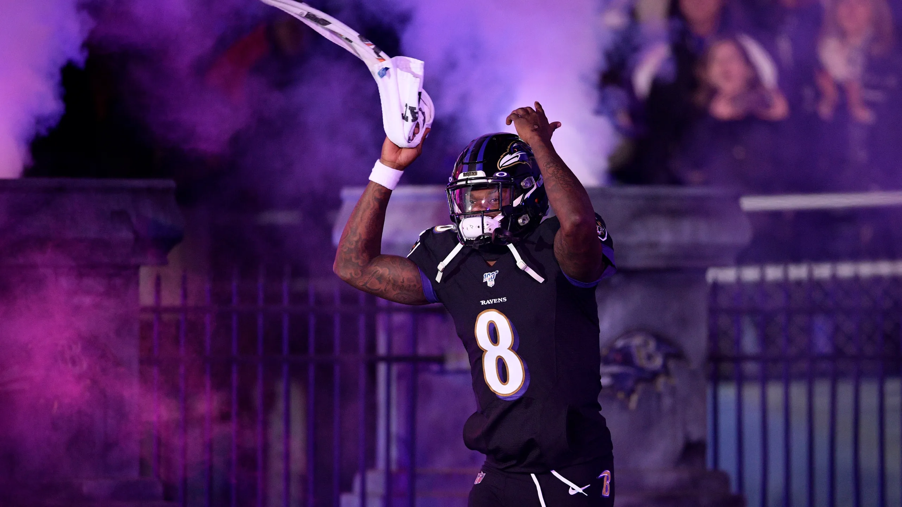

Season Wrap-up
Authored by: @PJ Hardcastle
As we head into the playoffs, there’s one thing for certain… If you don’t draft in person you don’t make the playoffs. Our league has spread out even further these past couple years but I’m very happy we are keeping this league alive and thriving. I know its not simple to travel across state lines to be at the draft party but everyone of you are missed during it.
This Fantasy Football league is one of the greatest. From the weekly ranking/writeups (thank you Snake), active WW on every available day, active trades, and proper smack talk. I’m lucky to be apart of this league. (#metoo - Jake)
Regular Season Awards
Authored by: @PJ Hardcastle
🥺 Biggest Letdown
Christian McCaffery - Drafted 1.01 in most leagues. 49ers didn’t tell the public how injured he truly was. He ended up being out until week 10 then only played 4 games after that, before getting knocked out again. He didn’t hit his projected score once and never found the endzone in those games.
🎖️ Honorable Mentions * ETN - 1st pick in the 2nd round ranking in at RB 42 right now. The Jags continue to be the Jags. * Justin Tucker - Before this year I thought to myself what if every team can just get 60 yards away from a field goal and can pretty much always score at least 3 when the bring out ole Tucker. He’s unrecognizable this year, and with how good the Ravens are this year he might be the main reason they wont bring home the superbowl this year for that team.
🤯 Most Surprising (In a Good Way)
Chase Brown - Trying to go with a FA/Late drafted player here and Brown checks both those boxes. He was drafted at 11.1 and was dropped after a very slow start. Since week 4 he has averaged 17.8 pts a game.
🎖️ Honorable Mention Bucky Irving - GO DUCKS - Came into this league as the 2nd RB option on a high-powered offense at Tampa and carved himself out a starting role. Scoring a total of 72.4 in his last 3 games and looks to continue it to the end of the year as the TB makes a push to the playoffs.
🌟 The Future Is Bright
Bo Nix - GO DUCKS - pick 12 (6th QB) in the 2024 NFL draft Bo goes to Denver. He faced one of the best teams in the league in his 1st game of the season and he really started to put it together week 5 and beyond. The 8-5 Broncos are making a strong playoff push while still taking an astonishing $53,000,000 dead cap hit for RW3 to not be their QB. Sean Payton is cookin over in Denver. Wait for that contract to be off the books and that team getting more weapons in the years to come. ( I swear PJ really wrote this not me, lol - Jake)
🎖️ Honorable Mentions (by Jake) * Brock Bowers - Pretty straightforward, the guy’s a beast already. * Malik Nabers - Man needs a QB and a front office that won’t get him killed, but he’s special. * Ladd McConkey - This is a little bit of a prediction, he’s been great over the second half of the FFB season and I think he’s just got it. (fucking insane 50% target share last week)
🏆 Most Valuable Player
Lamar Jackson—This guy was created in a lab. He has already won two MVP awards in the NFL, and this year, his numbers are even better than the two years he’s won them. This offense is one of the scariest in the league, even before they added King Henry. Fantasy-wise, he’s #1 overall, and Andy will try to keep his head above water with his bye in week 1 of our playoffs.
(He also must be taking his vitamins because he hasn’t got the flu once this year! - Jake)
🎖️ Honorable Mentions * JA17 - Man or machine? his biggest jump this year has been his TD/INT ratio. Also was credited with a TD pass and a TD catch to himself this year. * Saquon Barkley - Every time this guy touches the ball you almost expect him to get a touchdown. If Jalen Hurts wasnt getting all the tush push TDs I think he’d be #1 right now.
“I’ll have a tough time sleeping if Saquon goes to Philadelphia” - Giants owner John Mara
“THANK YOU GIANTS” - everyone in Philadelphia
Obituaries
The Brooklyn Dodgers had a saying: “wait ‘til next year.”
Authored by @PJ Hardcastle and @Jake Bowen
5th Place - Chris Johnson
Achanes Cocaine Train/Chris Cocaine Train/Bubble Boy (7-5)
Regular Season Highlights Strung together a 6-game win streak to just get bumped out of the playoffs by the over PF tiebreaker on MNF during the last minute of the game.
Parting Thought That week he didn’t play a defense really bit him in the ass. At least he has a good chance in winning the Slutler bracket.
6th Place - Yung Pangy
Sweet Brotha Numpsay (6-6)
Regular Season Highlights Saquon was a godsend, but not enough to get Pangy all the way there with CJ Stroud taking a step back. As Kyren Williams and Stroud came back to earth in the back half of the season, so did this squad, coming up just short of the playoffs.
Parting Thought Terry McClaurin would probably make a good keeper next year.
7th Place - Neo
Josh Allen’s Fat Hog (6-6)
Regular Season Highlights Neo was lookin STONG with a duo of a couple of the best FF WRs in the league. The injury bug came out and took Godwin as well as Nico (5 games) he just couldn’t fully recover from that and finds himself in the Slutler Bowl.
Parting Thought It’s gotta be great having one of the best QBs on your FF team especially when he’s the QB for your NFL team as well. Happy this dude made the trip to be at our draft in person.
8th Place - Kris “I don’t know the league rules” Turner
Swift Loves Kelce (6-6)
Regular Season Highlights Kris sniped Jayden Reed with an 8th-round pick, finishing the season around WR11, Kittle was also a nice add via trade. Despite ending in 8th, Kris had a nice bounce-back season from being last year’s Slutler and was in the mix for the playoffs until the end of the season.
Parting Thought Can Kris build on this season to make the playoffs next year?
9th Place - Joel’s Hole
Griddy Griddy Bang Bang (3-9)
Regular Season Highlights Well, a lot of the regular season highlights are teams scoring on Joel. With the most PA sitting at 1764.4 (thats 135.7 per game) he just couldn’t catch a break to make a push to the playoffs. His team looks great on paper and with Pacheco back it might be hard to keep him at the bottom of the slutler bracket list.
Parting Thought Jags. Stay away from Jags. - Jake
10th Place - A Dubb
Above and Bijan/LaPorta Potty (3-9)
Regular Season Highlights Oof, it was a tough season for Tony, but he stuck with it, finishing the season with two wins in the last three weeks, against two playoff teams. Makes you wonder what could have been.
Parting Thought Tony was voted most likely to fall asleep at the draft this year, from his comfy looking office. Gotta be at the draft next year, big dogg. Also, Go Ducks!
Playoffs - Round One Preview & Predictions
Presented by @Joel Hernandez and @Neil Calvert
#1 8==D (PJ) vs. #4 Jahmyr We Go Again (Jake) Well, well, well. The commissioners are going at it in the first round of the playoffs. These two teams can definitely score in bunches. It came down to the wire for Snake getting in. Hopefully, his team can keep up the momentum. There are definite question marks on this team. Gibbs and Kraft got Snake a decent start.
PJ’s team is looking pretty complete. Not having Breece Hall hurts a bit but there are plenty of other late season weapons making there way into the scoring totals. Also, if Boswell keeps scoring at the pace he is, it is going to be hard to stop this team.
Prediction I got PJ by +35 in this matchup. GG EZ CLAPS!
#2 Mr. Turna 2-to-uh-4 (Andrew) v. #3 Wont You Be My Nabers (Seif) Two teams that have started and stayed at the top of the standings for the entire season. Both teams sporting lots of talent and good depth, I feel comfortable saying this is a true 1st round battle of the heavyweights.
Matt finally spent some FAAB, shrewdly saving his wad until he could blow it all over Isaac Guerendo. With Mason and CmC obviously out for the season, I think this will prove to be a very nice play to net Matt some big RB points when it matters most. And with Taysom, Shaheed, and Olave out for the season - who else is going to get touches for the Saints? I think we’re going to see a return of Week’s 1-2 Kamara for some monster points from him as well. Mixon is on a bye this week, but he’s been fucking incredible all year. Oh yeah, and Bowers…perhaps the best rookie TE ever? ‘nuff said.
I still like Andy’s team a lot obviously though, and anything can happen in any given matchup. Countering Seif’s Brock Bowers, I think Andy is also a bit of a TE conossieur himself, with McBride and the surprisingly productive Jonnu Smith both finding their way into his starting lineup (and rightfully so). Aaron Jones is tried and true, then add in his own stud RB in Chase Brown (currently getting roughly 114% of Cincy’s backfield work on a team with no defense that’s averaging roughly 69 points per game) - he’s definitely got a squad that can compete.
Prediction I think Matt’s top-end depth will see him into the championship, 260-241.
Good luck in the postseason, to everyone besides Matt, PJ and Andy!
- Snake